80s Style
Three directions that bring 1980s game box art and cartoon intros into the site home page and the game's home screen, translated into this game's pixel art and Endesga 32. Each shows a logo lockup with a tagline plate, the 360x560 home screen, a small UI kit and the site hero at desktop and phone width. The dogs, walkers, faces, icons and the yard are the real exports; the logos, skies, frames and buttons are new and exist only here.
Start screen: hierarchy, sections and one Start
The gate scene stays as it is live, with the yellow sign logo. Below it are three framed sections and one call to action. There are no step numbers and no ticks. A required section with nothing picked has a dark frame and names what it needs in amber on its band. A complete section has a gold frame and a lit amber band that names the choice. Gear is optional, so with nothing equipped it stays dark and plain, never "incomplete". Start walk is the same button in every state: dim and flat until the walker and a dog are picked, then green and raised.
Hierarchy
Start screen (360x560)
├─ Top bar
│ ├─ Bank: $0
│ ├─ Best walk: "No walks yet"
│ └─ Logbook, Settings (icon buttons)
├─ Gate scene (live art, unchanged)
│ ├─ Help, Sound (icon buttons)
│ ├─ Walker's speech bubble: "Morning! Who are we walking today?"
│ ├─ Yard sign: the DOG WALKER logo
│ ├─ Slot sign: "Slot 2 · $800", "Save $800 more" (buys a pack slot; a secondary tap)
│ └─ The chosen walker (and pack) at the gate
├─ Pick a walker (required)
│ ├─ Prompt: "Tap a face", then the walker's name once chosen
│ └─ 4 walker faces
├─ Pick your dogs (required)
│ ├─ Prompt: "Add a dog", then the pack count ("Pack 1/1") once one is picked
│ └─ 9 dog tiles: face, name, trait and owner icons, fee ($20/zone) or price ($600) and lock
├─ Gear (optional)
│ ├─ Prompt: none while nothing is equipped, then the item's name
│ └─ 5 gear tiles: icon, price, name, lock
└─ Start walk: the one call to action
├─ Not ready: dim, flat, same words and place
└─ Ready: green, raised
The "Hold for details" hint has no place in this tree. It belongs in the How to walk screen or the speech bubble's rotation of lines.
Patterns borrowed from loadout screens
- One confirm button with a fixed name and place that only changes state, as in Slay the Spire's Embark, Into the Breach's squad start and mobile "pick a squad, then Battle" screens. Start walk never says what is missing.
- The requirement is shown where it applies, like a team picker's empty slots or a "0/3" count: "Add a dog" sits on the dogs band, "Tap a face" on the walker band.
- A locked-in choice lights up and names itself, like Mario Kart's character panel once confirmed: the gold frame and amber band show "CASEY" and "PACK 1/1".
- Optional slots never block the run, like Hades' keepsake slot: Gear stays neutral when empty.
- Each section is a card holding its heading and its options together, so the frame shows done or not done for the whole group at once.
Main: the fit's layout (walker heading beside the faces)
Nothing picked
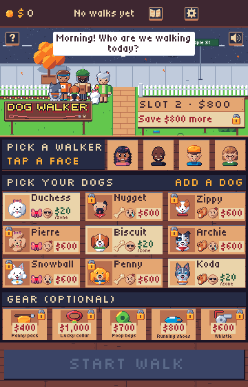
Walker picked, no dogs
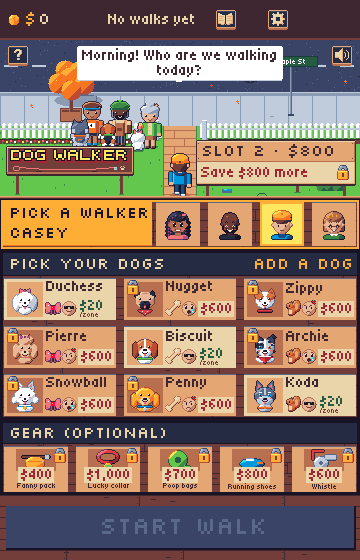
Ready
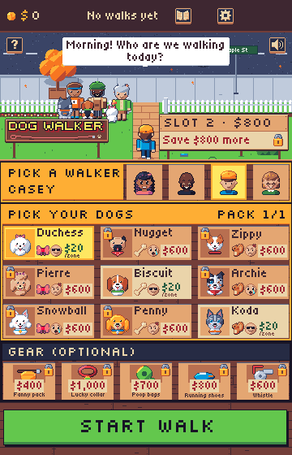
Variant: the same anatomy for every section (band on top)
Nothing picked
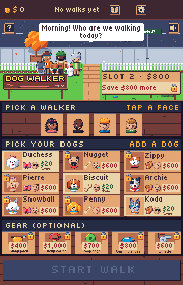
Walker picked, no dogs
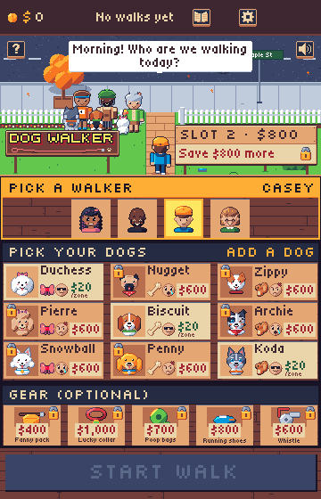
Ready
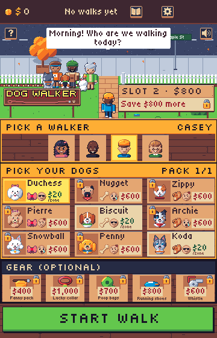
Live /play/ (360x640)
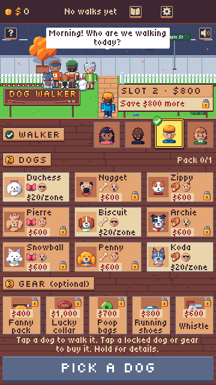
Yard-sign logo, 128x30
The board, grain and leash are the live ones. The letters are one flat yellow (6.79:1 on the dbrown board) with a 1px ink outline and a solid 2px dark red shadow. Amber with rust and cream with orange are the alternatives.
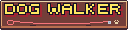
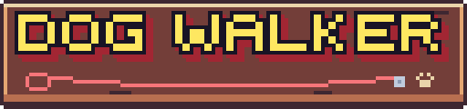
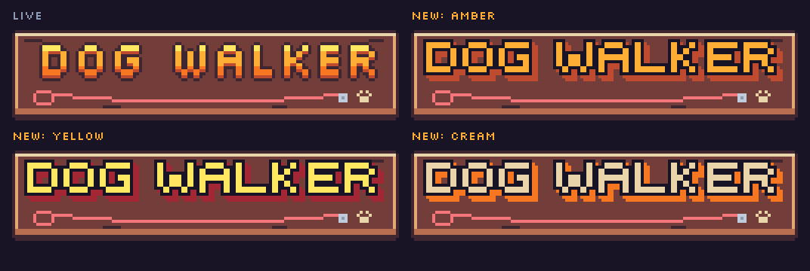
The directions
A: Chrome & Sunset
Transformers logo chrome, synthwave dusk skies.
- Logo: slanted chrome letters, a sky reflection over a white horizon over a sunset ground reflection, a slate extrusion and star glints.
- Gate: a dithered dusk sky with a striped sun behind house silhouettes.
- UI: wood becomes ink and navy panels with a cyan top and purple bottom line; step plates get a sunset number block; Start walk keeps its green, banded like chrome.
- Fit: the most striking logo, but it pulls the home screen toward night while the walk itself is daytime.
B: Rainbow Cloud
Care Bears rainbows, clouds and sticker outlines; Jem's pink and purple sparkle.
- Logo: bouncing bubble letters, one rainbow colour each, a white sticker rim and a purple drop; the tagline on a white pill between hearts.
- Gate: a daytime sky with a rainbow arc and cloud banks over the real fence and yard.
- UI: cream panels with rounded corners and a pink inner line, pink ribbon step plates, pill buttons with a white rim, rainbow stripes as dividers.
- Fit: the warmest and closest to the current cream and tan UI. Decorative hearts would need to drop the red so they never read as the owner's heart meter.
C: Box Art Lineup
TMNT and 80s toy box covers: lineups, rays, starbursts.
- Logo: heavy slanted amber letters with a white glint, a 2px ink outline and a hard dark red drop shadow; the tagline on a red ribbon.
- Gate: sun rays over a city skyline; a "9 DOGS!" starburst on the lawn.
- UI: comic panels (cream, 2px ink outline, hard ink shadow), slanted red title bands, slanted buttons with speed lines, a halftone background.
- Fit: the best fit for the website's box cover and character lineup; the busiest in the game, and the skyline contradicts the suburban street.
Logo and tagline
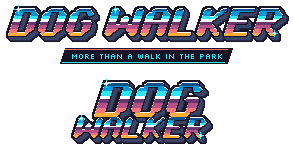
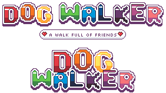
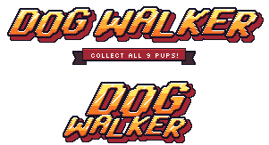
Game home screen, 360x560
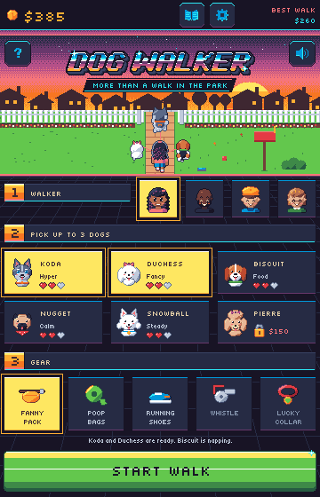
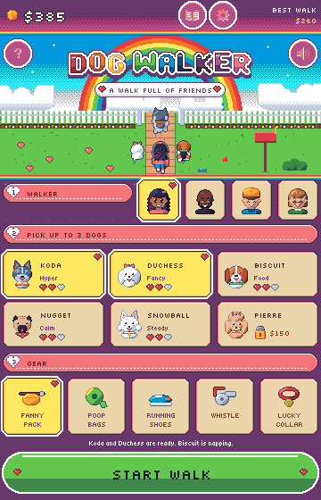
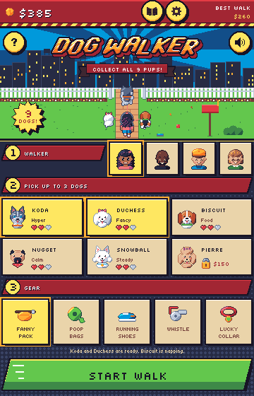
UI kit
Primary (amber), secondary (tan) and go (green) buttons, a panel frame, a title band and a badge, at 2x.
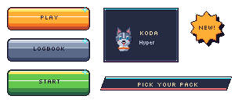
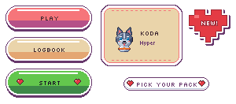
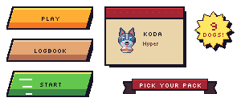
Website hero, desktop
The pixel hero is 320x180, shown at the frame's width. The nav, pitch and Play button are HTML in the same palette.
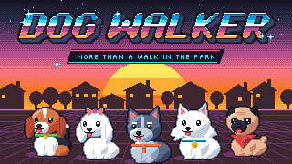
A cozy pixel-art lane runner. Walk a pack of dogs through the neighbourhood, and every bump in the road turns into a choice.
PLAY Steer with ← → or swipe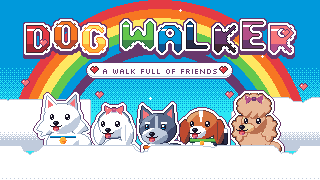
A cozy pixel-art lane runner. Walk a pack of dogs through the neighbourhood, and every bump in the road turns into a choice.
PLAY Steer with ← → or swipe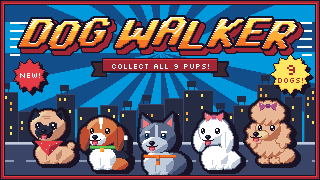
A cozy pixel-art lane runner. Walk a pack of dogs through the neighbourhood, and every bump in the road turns into a choice.
PLAY Steer with ← → or swipeWebsite hero, phone
390 wide: the 195x260 hero at 2x with the stacked logo.
Recommendation
B (Rainbow Cloud) for the game: it stays daytime, keeps cream and tan panels, and its sticker rims read at 1x. On the website, add C's lineup of portraits and a starburst sticker to B's sky and logo.
A light first step: replace logo with the bubble lockup and the tagline pill, put the rainbow and clouds behind the gate on the home screen, and use the pixel logo and a portrait lineup in place of the Silkscreen heading on the site. The wood panels, run screen and cards stay as they are until the look has been tried.